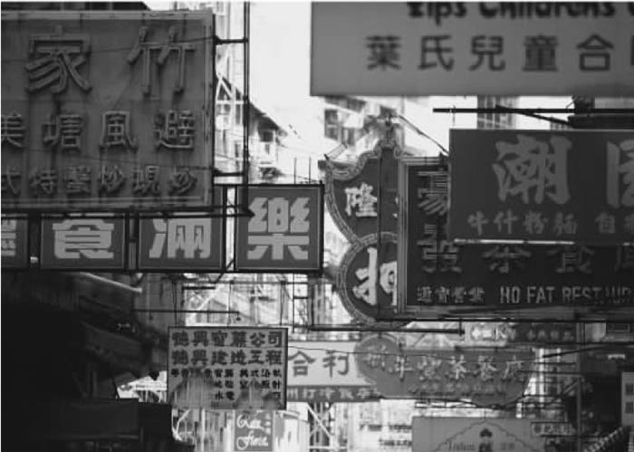
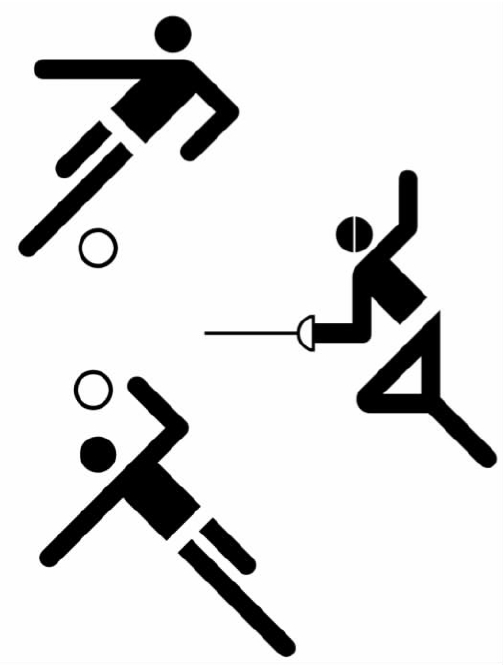
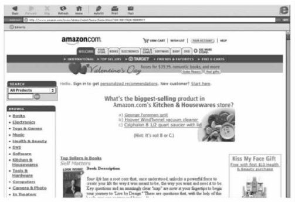

在这里，“传达”作为一个简略的术语，被用来讨论在现代生活中使用范围很广的平面材料。平面媒体形式已经扩张到我们生活的各个方面，我们到哪儿都不断地受到视觉图像的轰炸。它们可以起到通知、命令、影响、鼓动、混淆或激怒的作用。无论是从正面的还是从负面的意义上来说，它们的影响都很深远。无论是打开电视机，浏览互联网，还是沿着一条街道走，翻阅一份杂志，或者走进一家商场，我们都会遇到大量的标志、广告和各种大大小小的社会宣传。有些图像（如一个街道标志）可以是永久的，但是与物品相反，绝大部分的传达（如报纸和广告材料）都是短暂的。

图15 竞争视觉化：香港特别行政区街道上的各式招牌。
同时，我们有必要注意到物品和传达之间另外一个重要的区别。物品本身可以通过视觉形式存在，即使在没有其他参考的情况下也能使用。比如，一个花瓶或供小孩子玩的乐高拼装玩具，并不一定需要配备任何文本来帮助我们了解或使用它们。它们本身具备的视觉或者触觉品质就能直接传达非常有效的信息。但是，平面图像与物品不同。作为个人表达的一种方式，这些图像在传达中具有很强的即时性。它们能够强而有力地刺激生成一系列的反应，虽然我们无法精确或者提前计算出它们产生的影响。但是，为达到不同的实际目的，在诸如地图或者图表之类的形式中，我们通常需要用文本来补充平面图像，以获得一定程度的精确性。我们尝试着通过图标和图形符号来进行有效的意义传达，尤其是当用户来自不同国家、使用不同语言的时候。目前，我们的努力已经取得了一些成功。奥托·艾克为1972年德国慕尼黑奥运会设计的明了易懂的标志系统，是这方面经典的范例。这组标志系统被后人大量效仿。然而，仅用一则广告或一本宣传册作为产品的使用说明，或者仅张贴一幅图或图表，而没有任何形式的文字说明，通常都稍嫌含混，难免会造成歧义。所以，要实现有效的传达，文字和图像制品的结合是非常重要的。
与物品设计一样，传达设计中包含了大量不同类型的实践，其覆盖范围相当广。传达设计活动中出现得最多的当数“平面设计师”。这个术语最先出现在二十世纪二十年代，专指负责平面图像设计的人。然而，就像设计中的大多数术语一样，这个词也会造成一些混淆。它包括为小公司设计笺头的设计师，也包括为大公司设计视觉识别程序的设计师。然而，无论是哪个层次的操作，平面设计师都要使用同样的标志、符号、字体、颜色和式样来生成信息和组织资料。

图16 无界限传达：1972年，奥托·艾克为德国慕尼黑奥运会设计的标志系统。
与物品设计师一样，平面设计师也可以作为顾问或组织内部的成员。有些平面设计顾问有很鲜明的个人风格，比如美国设计师阿普丽尔·格雷曼。在美国接受完初级训练后，她来到了凸版印刷术发源地之一的瑞士继续学习。她是为人所熟知的将计算机运用到设计中的先驱，被称为“用鼠标从事设计的女性领袖”。格雷曼利用计算机的功能将多样的材料、不同种类的图像和文本相叠加，产生了令人耳目一新的、充满了深度和复杂性的作品。在洛杉矶经营自己的事业许多年后，她于1999年成为了五角国际设计公司的合伙人。像这个公司其他所有的合伙人一样，她对自己的作品全权负责。
平面设计咨询服务可以以大型组织的形式存在，最有名的平面设计咨询公司也许就是由已故的沃尔特·兰多尔于1941年在旧金山成立的美国朗涛设计顾问公司。沃尔特·兰多尔生于德国，在英国接受了专业的设计教育。他认为了解消费者对公司和产品的认知与了解产品的制造过程同样重要。在这个基础上，他成立了自己的顾问公司，并使它成为了品牌策略和企业形象设计领域的权威之一。朗涛设计顾问公司成立六十年后，已经拥有员工八百多名，工作室二十五个，分布于美洲、欧洲和亚洲。它为世界上无数知名公司设计了商标形象。其中包括为多家航空公司设计的企业形象项目，如意大利航空公司、美国达美航空公司、巴西大河航空公司，以及加拿大航空公司。其他的企业形象项目还包括法国电信、联邦快递、英国石油公司、惠普公司、微软公司、百事可乐公司、肯德基，以及必胜客等。它的作品中还包括替很多重大事件进行的设计，如为1996年亚特兰大奥运会设计的标志以及为1998年日本长野、2002年美国盐湖城冬季奥运会设计的全套形象系统。尤其，在其他设计顾问公司迅速壮大，而后相继败落的情况之下，朗涛设计顾问公司这些年不断稳步地成长，这确实令人瞩目。
与物品设计相比较，企业内部平面设计师的工作似乎没那么专业，这主要是因为他们选材的范围要广阔得多。当然，内部平面设计师必须一直将焦点放在与公司相关的问题之内。他们需要承担的工作和责任的范围相当大。有些行业需要定期制作大量的小册子、说明书、包装以及标签，这就需要有人专门从事平面设计的工作，以确保这些材料的流通。在很多大公司里，一些设计师并不需要原创的理念，他们更多是在专门的顾问公司设计的企业形象系统框架内进行创造性的解说。书籍、杂志或者唱片包装的出版商定期要求设计师设计出具有高度原创性的、仅供一次性使用的材料。但企业内部的设计师并不需要受到这些方面的限制。
不同类型的政府机构也都需要制作大量的表格和文件。它们大多充斥着官方术语，字体很小，需要市民花大力气去解读，然后在狭窄的空格上填写必要信息。对英国护照申请表格进行的改进可以算是这个领域内令人印象深刻的例子。以前，要弄懂表格的要求是一个非常痛苦的过程，如今，高效的平面设计让人们能很容易地掌握要求，并能很快地填写表格。这个例子证明了，政府机构推出的设计其实没有任何内在的理由需要如此华而不实。当纽约市被预言将作为一个功能性实体而瓦解的时候，纽约市政府正式委托米尔顿·格拉泽设计了一款“我爱纽约”的心形图案，这是史上被效仿得最多的平面形式之一。
各种各样的公共非营利性团体也有广泛的设计需求。广播公司中最有影响力的设计项目之一是由波士顿WGBH公共电视台制作的，它旗下有一个由三十名设计师组成的团队。要建立一个电视台的视觉形象，可以从银屏直接入手和采用间接素材，其中需要利用大量的手段，包括徽标、节目介绍和标题、动画片断、教学材料、成员信息、年度报告、书籍以及多媒体包。
许多教堂和慈善机构对出版物也有很强的依赖。末世圣徒教会拥有一个六十人的设计团队，本部设在犹他州。这个设计团队负责从纸制印刷品、电子刊物到商品包装的设计，这些设计是其传教活动的一个固有特色。类似乐施会那样依靠赞助的团体也需要长期宣传它们的事业，以获得公众的支持。
对博物馆而言，从展位的平面图到指向标志以及主要的目录表等一些数量庞大的材料也必不可少。近几年来，博物馆的在线网站成了一个相当重要的延伸领域。其中一些博物馆只是简单地用另外一种形式将已有信息搬到网上；而另外一些博物馆，如洛杉矶的盖蒂博物馆，则通过向更多的观众展示其丰富多样的藏品来挖掘网络博物馆潜在的教育能力。
那些进行政治和社会抗争的机构也必须予以关注。反核武器运动的标志就是一个经典的例子。这个标志几乎同米尔顿·格拉泽设计的心形图案一样被广泛复制，它也见证了这些团体设计形式的能力。最近，对抗艾滋病的团体设计了一款红丝带标志。
在技术层面，传达的一个特色就是它涉及的范围广泛，几乎无处不在，可同时指向综合化和专业化两个方向。一方面，具体的传达可能结合了不同的视觉元素。比如，一件包装物上就可能凝聚了材料和结构准则，包括带有说明性和高清晰度的视觉形象、企业徽标、集合了排印技巧的字体设计等表现手段；同时，按法律要求，包装上还需附上商标、标志、使用说明和产品信息。另一方面，随着设计范围的扩大，一个具体单元常常要求设计具有专家水平，在某种程度上与制作电影的能力要求相似。例如，它可能需要综合排版、插图、摄影、信息设计或者计算机程序界面设计，其中任何一项工作都只有每个领域的专家才能处理。
字体是设计中最为基础的组成要素。排印，即设计字体和排版，是创作印刷形象的基本技巧。字体设计可以以清晰度为目的，试图最大限度地传达信息；当然，字体设计也可以是为了表达或唤起某种强烈的情感。随着计算机的介入，可用字体的范围越来越惊人。设计师既可以从宽广的历史和地域范围中，又可以从新近设计的格式中，考察各类范例。字体编成字库后，我们可以将它们放大很多倍，也可以通过选择墨色来体现细微的区别，或者将文字处理成富于表现力或装饰性的形式，作为设计中具有高度表达性的元素。
出版物采用了很多形式，其中，书籍是传达观点和信息的典型载体。电子媒体问世后，大多数人认为书籍将退出流通领域。但由于书籍便于携带，方便阅读，适合不同的人群，所以它们仍然保留了可观的优势条件：至今，在数码世界里并没有出现类似于“书籍收藏者”和“书籍爱好者”的词汇。相对而言，报纸和杂志更新较快，它们也因此更易受到电子媒体的冲击。人们经常根据兴趣组成社团，社团内的成员对特定类型的书（如哈利·波特系列）有广泛的认同；人们有时也会从独特的社论政策或立场出发，组成社团。出版物（如《泰晤士报》、《时尚》杂志、《滚石》杂志和《连线》杂志）的视觉形象是产生此类吸引力的主要元素。在一个更为极端的层面，许多亚文化也是围绕这些出版物形成的，比如戴维·卡森的作品。卡森是加州的一位设计师，二十世纪九十年代初，他为《激光枪》和《沙滩文化》杂志做设计。卡森利用计算机创造出了各种动态形象，在杂志所面向的青年文化市场引起了广泛的共鸣。
插图虽然强调传达的艺术性，但却是区分很多从业人员的核心技巧。雷蒙德·布里格斯或昆廷·布莱克与众不同的风格，包括他们非凡的讲述故事的才能，使他们开创了作者兼插画大师的职业。年轻一辈的代表人物有苏·科和亨里克·德雷舍尔。科生于英格兰，主要在纽约工作。他利用传统手工艺（如蚀刻术）创作的系列印刷品引发了热烈的社会评论。德雷舍尔生于丹麦，曾在美国接受教育，现今在新西兰工作。他曾在《纽约时报》和《时代》杂志上发表过作品。他利用媒染技术处理出风格怪异的作品，其中最好的作品应数他出版的儿童读物了。他对计算机的使用出色地证明了数码技术作为一种创造性工具所具备的潜力。
然而插图也可以是一项有着很强专业性的工作，通常要求相当多的专门技术知识，比如在创作技术插图或医学插图的时候。一些顾问公司关注这些技巧，将它们当作一个特殊的市场，如教育性和科学性的出版物，或者博物馆和展览馆的展览。摄影可以是最富个性的工作，但为了达到某个特殊目的，它又可以采用专业化的形式，例如纪录片的摄影，或者为促销对象、展览目录以及其他出版物进行的摄影。
传达最令人印象深刻的特点之一便是它采用的方式。随着多媒体出版业的发展，设计的许多方面都经历了急剧的变形，文本、图像、视频和动画相结合的方式提供了无限的可能性。人们在互联网上很容易就能感受到这种新媒体覆盖的范围和它的机动性。它在提供直接经验和快速通道方面的潜力仍处于初期开发阶段，由于无法简单拷贝其他媒体的形式，它在排版和图像的发展形式上仍存在大量问题，这些是电子出版物必须面对的具体问题。总而言之，随着商业运用的进一步扩大，我们需要更多地关注一些主要的问题，比如，如何在错综复杂的网站中浏览，如何面对庞大的信息量带来的问题。比较成功的在线网站（如亚马逊网和城市旅游指南网）展露了新媒体的潜力，但也暴露了它的种种局限。通过设计出客户容易掌握的界面，这些网站开拓性地为客户提供了选择的种种可能。然而，同时需要强调的是，尽管信息处理渠道发生了急剧的变化，通过这些渠道购买的对象却基本上没有改变，比如书本和飞机座椅的设计就没有受到这种变革的影响。

图17 让网页浏览越来越容易：亚马逊网。
电子媒体革命带来了持续的发展，其最高形式是电子商务。电子商务已经得到了迅速的拓展。它简化了各种程序，使得客户能从他们的电脑上访问网站，这些能力都可成为提高效率的巨大潜力。厂商可以存储大量关于产品和服务的信息，这样消费者就能够及时订购商品，同时，资金和设备也不会陷在大量的库存货物上。然而，这类系统的效率主要是以信息处理的清晰度、准确性和可理解的程度来衡量的。客户无法快速浏览他们需要的页面是供货商将面对的主要不利情况。需要强调的是，对于这些在线网站而言，如果不能让用户参与进来，大师级的视觉效果也没有用。
随着大量的技术不断地被进一步分化、合成，比如，在动画片中配上说明，或者为电影名称排版，多媒体应用的复杂性也说明了传达更为广泛的特点。索尔·巴斯从事的设计活动既包括电影宣传，又包括企业徽标设计，而这两者根本就是风马牛不相及。电影宣传方面，他参与了奥托·普雷明格的《金臂人》以及阿尔弗雷德·希区柯克的《惊魂记》的制作。在这两部经典电影中他将包括视觉图像、字体以及象形符号在内的多种元素与音乐相结合，创造了引人入胜的场景。这些元素不仅仅是字幕设计的基本原则，同时也是其他宣传素材（如海报和广告）的基础。另外，他同时也为联合航空公司和美国电话电报公司设计了企业徽标。作为这样一个负责大量大型工程的平面设计师，为了确保每个环节正常运转，他需要对各行各业都有所了解。所以说，人们原以为设计师都是独行侠似的艺术家，但实际上他们可能是一群或一组综合性人才。
传达在信息设计领域受到了质疑。所谓的信息设计是设计传达中一个高度专业化的分支，任何项目产生的数据都将会被用来作为决策的基础。在很大一个范围内，这类信息可以通过多种形式、多种媒介来呈现，比如我们日常生活中的天气预报。来自众多渠道的资源被快速地转换为视觉形式，帮助人们决定旅行时该带什么衣服，工作时应该有什么设备。我们可以通过阅读各类日报上的图片和文本，观看电视里的图像、视频或访问在线网站来获得这类信息。美国气象频道二十四小时连续播报气象预报，英国广播公司定时在电视和广播里播报天气，除此之外，人们还可以从相关的网站上了解到一周范围内全国、各地区或城市的详细天气预报。此外，从美国一家名为世界黄页网的网站上，人们可以了解到整个北美地区电话用户的相关地址信息，其中附有详细的区域地图、住宿信息以及每个地址附近的设施状况。又比如，在市场信息传达的新方法上，晨星公司为我们提供了例证。晨星公司总部设在芝加哥，专门提供财务数据服务，以供投资者在购进和卖出共同基金时参考。公司的核心任务是通过大量的平面设计手段，将庞大的数据压缩，整理成清晰明了的格式，使用户能够快速准确地了解市场并做出投资决策。起初，公司使用印刷物来传达信息，现在这项服务已经能够在线提供。晨星公司所强调的首要责任是服务内容，而不是审美表达。然而，由于公司的整体形象保持了高度的一致性，实际上它已经成为了一个鲜明的审美形象。
与之相反，广告作为渗透式传达中最为特殊的领域，本身就极具诱导性，其主要目的不是赋予用户以权力，而是利用文本、图像的结合来推销产品和服务。为了使物品设计达到最大限度的视觉影响，设计者会考虑到将它转化为广告形象，如此一来，物品设计和传达设计中自然会存在一些交叠的部分。就这个意义而言，在贯彻市场竞争的诸种元素时，广告形象可以使人们在实际看到物品前形成对物品的认知。例如，一款新车的车型真正出现在大街上之前，大部分人早就通过广告先看到了这款新车。
大部分广告都有一项特征，那就是它们一边试图打造某种观念，一边又不能得罪特定市场中的任何人，因此广告所描述的人和生活方式大都大同小异，没有特色。一些批评家批评广告商是现代社会中典型的木偶师，操纵人们做一些并非对他们最有益的事情。但是，大部分广告商认为自己周旋于社会潮流和客户利益之间，一方面反映社会上发生的种种事情，另一方面又将这些事情通过程式化的形式反映到广告活动和意象中。
然而，广告的影响力是不能小觑的，尤其是现在它已经成了诱导大众消费的工具。广告技术最先在美国得到发展，它对美国社会的渗透也是最深的。广告采用的方式和意象已经成了美国文化中不可或缺的一部分。无论是竞选总统，还是竞选其他政府要职，这些竞选活动都被美国人运作成一场广告战。他们不断调整候选者的形象，使其时刻符合不断变化的环境。结果，意象和现实之间的分界经常被模糊，这也正是这些技术带来的深层影响。
另外，广告与宣传之间的分界也被模糊了。后者是一项专门的传达形式，试图通过塑造民意来达到某种政治的或意识形态的目的。广告不能离它预期的观众对于现实的理解太远，即便它一贯的手法是通过选择性强调或选择性省略来歪曲人们的认知。但是，宣传与广告不同。宣传时常需要通过诋毁某个特殊群体来塑造一个形象。为此，宣传会将这些人描述为典型的“敌人”。尽管广告有时会失真，但是谎言与恶意歪曲是宣传的通病。
在这个急剧动荡和不断改变的时代，不同的文化相互交叠、相互借鉴又彼此结合，传达在现代社会的功能无疑是很庞大的，它在很多方面都非常重要。一方面，我们可以认为这是全球化进程的一部分。观念更加自由地往来于不同的国家和民族文化之间。即使是在不同的文化领域内，也有着类似的交换过程。专业设计师使用的多种形式即是如此，比如“涂鸦”形式就是从城区街道运动中的嬉蹦或者朋克文化中借鉴过来的；大众则使用计算机或打印社提供的器材，这些东西将专业技术打包成人人都能使用也能负担得起的形式。由此造成的一个负面结果是迎合当地需求的小型平面设计业务减少了。但是随着专业设计师逐渐走出严格的职业界定，同时，大众越来越多地参与到传达的活动中来，这种交叠也会带来一些正面影响。如果传达设计的目的之一是要在视觉方面形成一种身份感的话，那么新技术则加强了形象创造者和接受者之间的相互理解，为未来提供了无限可能。